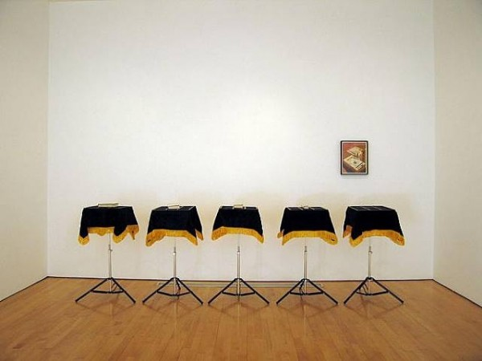

-
American Magic Drama
by Teddy Bergman March 23, 2011
The exhibition Houdini: Art and Magic began well before I showed up at The Jewish Museum on 92nd and 5th Ave. The ubiquitous subway posters initiated a particular relationship between me and the magician. Past the pregnant title, The Jewish Museum presentation of the show made for a wealth of personal associations. Here would be a reading of Houdini as a Jew – his performances of escape related to the great lineage of Jewish Diaspora from Moses to the Third Reich. I expected to find Houdini’s life instrumentalized as an icon of the early twentieth century Jewish experience (much in the way Michael Chabon had done in Kavalier and Klay). Houdini as the outsider, denied entrée to all occupations above a certain vaudeville, who, by virtue of his dogged spirit, went on to redefine American culture and, obviously, make a pot of gold while he was at it.
I was mostly incorrect. Art and Magic is less an iconic biography than the biography of an icon. This is announced early, at the show’s gates, where visitors are invited to “Have your picture taken with Houdini!,” a trick that involves being backdrop photographed to appear alongside the man astride the rural cask that co-starred in his Milk Can Escape.
On the softly-lit, deep-eggplant walls of the first floor we trace the performer’s rise to fame juxtaposed against the visual art – posters, photographs, newsreel footage, needles, crates, handcuffs, a milk can, a water torture cell – generated in his lifetime and in the decades since. These images arrive courtesy of Paramount Pictures, Alexander Calder, Joseph Cornell, and Mathew Barney, among others. Houdini is here part of a pantheon of American stars, the Elvis of magic, his celebrity all the more noteworthy because of its coincidence with the rise of mass culture itself.
Save some information about his father’s aborted rabbinical career, little is made of Houdini’s Jewishness. The central axis is instead his great escapes, performances that symbolize and enact the American dream simultaneously. Here was Houdini – née Ehrich Weisz, an Hungarian immigrant born in 1874 – escaping his poverty by performing “escapes” over and over, an act with definite and obvious appeal to a late 19th century both flush with immigrants and still standing in the shadow of slavery.
In escaping from objects like strait jackets, handcuffs, and shipping trunks, Houdini demonstrated an ability to slip through the bars of the descending, iron cage of modern industry. As implements of the century’s positivist obsession with criminology, the strait jackets and the handcuffs made for a particularly spectacular subversion. By all accounts a master showman, Houdini was equally gifted as a designer and as a producer. Curator Brooke Kamin Rapaport describes his straitjacket escape:
Houdini often chose the skyscraper as a backdrop, then an inspiring emblem of American progress. The setting also promoted a dynamic contest between the human spirit and an urban symbol: a lone performer versus industrial might. Houdini always won.1
The artist manipulated his settings with the same brutal efficiency he did his own body. One critic writes that in his outdoor performances Houdini succeeded in “netting the sky,”2 suggesting that through his upside-down, straitjacket escapes Houdini managed, through a Stevens-esque’s perspectival shift, to suit the visual iconography of New York entirely to his purposes. Given the significance of the performer, it is curious that Art and Magic focuses so intently on the circulation of “Houdini” in the visual culture that co-opted his work. Entirely devoid of performance, the show accepts at face value the transformation into image. Thus Paramount Pictures’ scrubbed, shiny, 1953 big-budget star vehicle, Houdini, is offered as a reflection of 1950′s consumerist America. Mathew Barney’s use of Houdini in Cremaster 2 from 1999 and Cremaster 5 from 1997 are read as part of that artist’s abiding obsessions with metamorphosis and the clash of culture and nature. These relationships are interesting, but I was left wondering about Houdini’s relevance to the magicians of today. Choosing to chart the ways in which invocations of Houdini have reflected the culture that produced them, the show ushers him into the pantheon of artists at the expense of his work’s specific history. Art & Magic has the art part covered; it’s the magic that I missed.
It’s understandable, of course; when I think of what we’d (have to) call contemporary magic, I think of Vegas. The spectacles of Siegfried and Roy, David Copperfield, and Chris Angel seem as synthetic and empty as the town that produced and sheltered them. Set against the desert and that great expanse of architectural pastiche, making a tractor-trailer disappear seems pretty small. The city is the better trick.
Houdini’s best work rested on the audience’s belief that he was putting his life at risk. Only by inviting death into the room could he produce the awesome catharsis that accompanied his inevitable victory. The recent performer closest to this in spirit is David Blaine, however Blaine’s biggest public stunts, and they are stunts, are always tests of endurance. The death threatened is a slow one. This kind of Kafka-esque public hospice doesn’t give individual spectators, present for only a fraction of Blaine’s “journey,” much to work with. In contrast to the inverted Aristotelian climax of a Houdini escape, Blaine’s long-form public asceticism is pure duration: an event-less appeal for celebrity itself. No wonder the exhibit prefers Houdini’s legacy in visual culture and contemporary art.
Still, there ought to be a reason why magic has become a technological and emotional runt in the litter of popular culture. Would we even be rooting, today, for Houdini to escape the straitjacket? Or, like the Romans at a gladiatorial event, would we look for him to fall? What performance would be an escape on a par, for us, with what Houdini’s audiences may have felt? The exhibition design of Art and Magic registers this question. The smoky walls, period music, and dim lighting, equal parts magic and vaudeville, are haunting. The space testifies not only to Houdini’s power to enchant, but to its enduring absence and our inability to experience what his audiences did, one hundred years ago.
- Houdini’s Transformation in Visual Culture Brooke Kamin Rapaport, in Houdini: Art and Magic, The Jewish Museum and Yale University Press, 2010. [↩]
- Ann Douglas, “Terrible Honesty: Mongrel Manhattan in the 1920′s,” as quoted in “Houdini’s Transformation in Visual Culture,” Brooke Kamin Rapaport, in Houdini:Art and Magic, The Jewish Museum and Yale University Press, 2010. [↩]

1 Comment
Weekend roundup | Tyler Green: Modern Art Notes | ARTINFO.com
[...] At Idiom, Teddy Bergman links Houdini, an exhibition about him at The Jewish Museum, Matthew Barney and spectacle. [...]